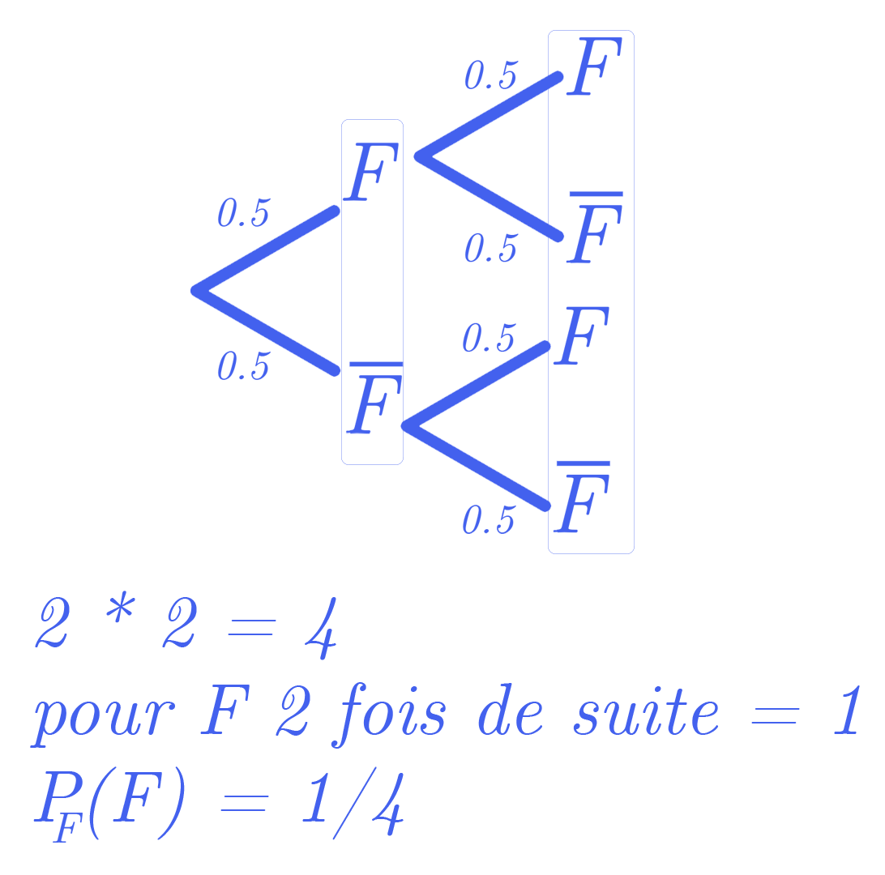

Évènement - Ensemble de résultats possibles d'une expérience aléatoire
Issue - Un résultat spécifique qui peut se produire lors d'une expérience aléatoire
Expérience - Action/processus pouvant produire différents résultats dont certains, incertains ou aléatoires
Univers Ω (omega) - Ensemble de tous les résultats possibles d'une expérience aléatoire donnée
On note Ā tout évènement contraire de A
La somme des probabilités des évènements doivent être égal à 1.
le symbole Union se traduit par "ou" et le symbole Inter se traduit par "et"
Ainsi on représente sa fréquence par
$$\frac{k}{n}$$
où k est le nombre de fois qu'une issue x se réalise au cours de n expériences identiques.
Équiprobabilité définit que toutes probabilités des évènements sont égales.
Par exemple, dans le pile ou face l'évènement Pile a les mêmes probabilités que l'évènement Face (1/2)
½ + ½ = 1
C'est aussi le cas avec un dé, non truqué, puisque la probabilité d'avoir 1 face parmi les 6 est donc de 1/6.
Et donc 1/6 + 1/6 + 1/6 + 1/6 + 1/6 + 1/6 = 6/6 = 1
Un évènement certain a comme probabilté 1. Puisque la probabilité d'un évènement varie toujours entre 0 et 1.
Soit 0 un évènement incertain, 1 un évènement certain (Ω).
Alors, pour tout évènement A, 0 <= p(A) <= 1
Pour tous évènements
P(A U B) = P(A) + P(B) - P(A ∩ B)
Pour tout évènement contraire de A : P(Ā) = 1 - P(A)
Des probabilités conditionelles peuvent se représenter avec un arbre pondéré.
On notera PA(B) l'évènement B sachant A.
Ainsi
$$P_A(B) = \frac{P(A ∩ B)}{P(A)}$$
Comme dans la première partie, la probabilité de B sachant A est toujours entre 0 et 1.
L'évènement contraire est donc la même chose pour B̄...
Enfin
$$P(A ∩ B) = P(A) * P_A(B)$$
Seulement dans les probabilités conditionelles ce n'est pas la même chose pour calculer la probabilité d'un évènement B.
Dans le cas du pile ou face nous avions pu dire que la probabilité de faire face 2 fois de suite est de 1/4 (schéma ci-contre)
On peut le vérifier en faisant P(A ∩ B) = 0.5 * 0.5 = 0.25... Mais vu que ici c'est équiprobable, On peut juste calculer le nombre de branche
On note que la probabilité de B est égal à la somme des intersections où B y est.
Ainsi on ajoute la phrase "A, Ā parition de l'univers"
$$P(B) = P(A_1 ∩ B) + P(A_2 ∩ B) + ... + P(A_n ∩ B)$$
$$0 <= p(A) <= 1$$
$$P(A U B) = P(A) + P(B) - P(A ∩ B)$$
$$P(Ā) = 1 - P(A)$$
$$P_A(B) = \frac{P(A ∩ B)}{P(A)}$$
$$P(A ∩ B) = P(A) * P_A(B)$$
$$P(B) = P(A_1 ∩ B) + P(A_2 ∩ B) + ... + P(A_n ∩ B)$$
Télécharger la fiche récap